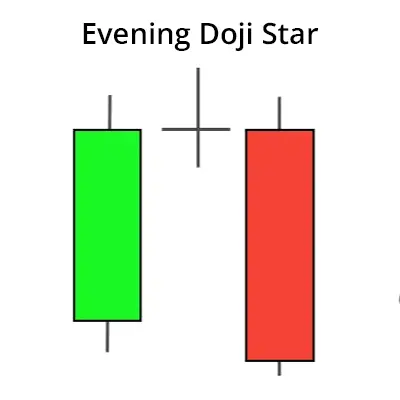

एक ईवनिंग डोजी स्टार एक लंबा बल्लिश कैंडल से बनता है, जिसे एक डोजी का पाला फोलो करता है जो इससे ऊपर गैप होता है, फिर एक तीसरा बियरिश कैंडल आता है जो पहले कैंडल के बॉडी में अंदर बंद होता हुआ परिवर्तन की पुष्टि करता है। यह एक मजबूत बियरिश मूल्य परिवर्तन कैंडलस्टिक पैटर्न माना जाता है।
| Evening Doji Star Indicator |
ईवनिंग डोजी स्टार इंडिकेटर टाइम टू ट्रेड चार्ट पर दिखाई दे सकता है। यह ईवनिंग डोजी स्टार चार्ट पैटर्न की पहचान करने के लिए उपयोग किया जा सकता है, जहां इंडिकेटर को 0 से ऊपर उठाया जाएगा जब ईवनिंग डोजी स्टार चार्ट पैटर्न की पहचान की जाएगी।